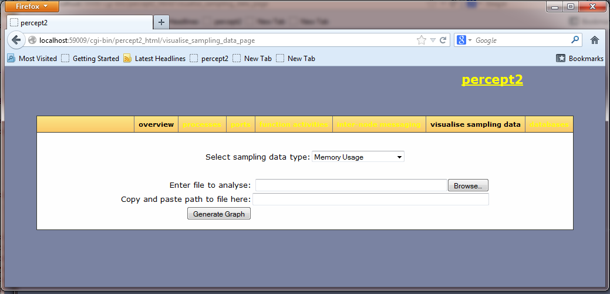

| Overview |  |
Authors: Huiqing Li (H.Li@kent.ac.uk).
This module provides a collection of functions for reporting information regarding memory usage, garbage collection, scheduler utilization, and message/run queue length, etc. This is done by sampling-based profiling, i.e. the profiler probes the running Erlang system at regular intervals. Sampling profiling is typically less numerically accurate and specific, but has less impact on the system. Data collected by the profiler are stored in files, and the Gnuplot tool can be used for graph visualisation of the data.
The following Erlang functions are used for the purpose of data collection erlang:statistics/1, erlang:memory/1, erlang:system_info/1 and erlang:process_info/1.entry_mfa() = {atom(), atom(), list()}
milliseconds() = non_neg_integer()
regname() = atom()
sample_item() = run_queue | run_queues | scheduler_utilisation | process_count | schedulers_online | mem_info | {message_queue_len, pid() | regname()} | all
the 'all' options covers all the the options apart from 'message_queue_len'.
seconds() = non_neg_integer()
| start/3 | Start the profiler and collects information about the system. |
| start/4 | Start the profiler and collects information about the system. |
| start/5 | Start the profiler and collects information about the system. |
| stop/0 | Stop the sampling. |
start(Items::[sample_item()], EntryOrTime::entry_mfa() | milliseconds(), OutDir::file:filename()) -> ok
Start the profiler and collects information about the system.
The type of information collected is specified byItems:
run_queue: returns the sum length of all run queues, that is, the total number of processes that are ready to run.
run_queues: returns the length of each run queue, that is, the number of processes that are ready to run in each run queue.
scheduler_utilisation: returns the scheduler-utilisation rate per scheduler.
schedulers_online: returns the amount of schedulers online.
process_count: returns the number of processes currently existing at the local node as an integer.
mem_info: returns information about memory dynamically allocated by the Erlang emulator. Information
about the following memory types is collected:
processes, ets, atom, code and binary. See erlang:memory/1.
message_queue_len: returns the number of messages currently in the message queue of the process.
all: this option covers all the above options apart from message_queue_len.
If an entry function is specified, this function profiles the system for the whole duration until the entry function returns; otherwise it profiles the system for the time period specified. The system is probed at the default time interval, which is 10 milliseconds. It is also possible to stop the sampling manually using stop/0,
OutDir tells the tool where to put the data files generated. A data file is generated
for each type of information in Items. For an item A, the name of the data file would be
sample_A.dat.
Sampling data is formatted in a way so that the graph plotting tool Gnuplot
can be used for visualisation. A pre-defined plotting script is available for
each type of information collected, and these scripts are in the percept2/gplt directory.
If you are familiar with Gnuplot, you could generate the diagrams in Gnuplot command-line.
Alternately, you could visualise the sampling data through Percept2, which uses Gnuplot to
generate the graphs behind the scene. (It is likely that we will get rid of the dependence to
Gnuplot in the future).
To visualise the sampling data, one could select the Visualise sampling data from the Percept2 main menu,
and this should lead to a page as shown in the screenshot next.

In this page, select the type of data you would like to see, enter the data file name, and the
path leading to this file, then click on the Generate Graph button. This should leads to a page showing
the graph. The screenshot next shows an example output.

start(Items::[any()], EntryOrTime::entry_mfa() | seconds(), TimeInterval::milliseconds(), OutDir::file:filename()) -> ok
Start the profiler and collects information about the system.
Different from start/3, this function allows the user to specify the time interval.start(Items::[any()], EntryOrTime::entry_mfa() | seconds(), TimeInterval::milliseconds(), FilterFun::fun((term()) -> boolean()), OutDir::file:filename()) -> ok
Start the profiler and collects information about the system.
Apart from allowing the user to specify the time interval, this function also allows the user to supply a filter function, so that only those data that satisfy certain condition are logged. See start/3.stop() -> {error, not_started} | ok
Stop the sampling.
Generated by EDoc, Mar 28 2013, 21:53:01.